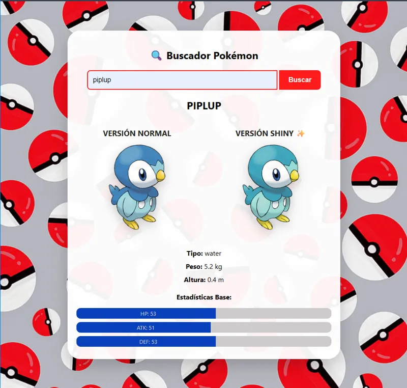
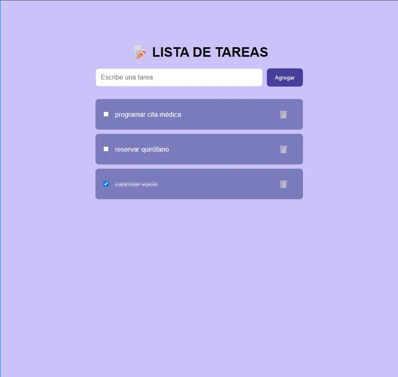
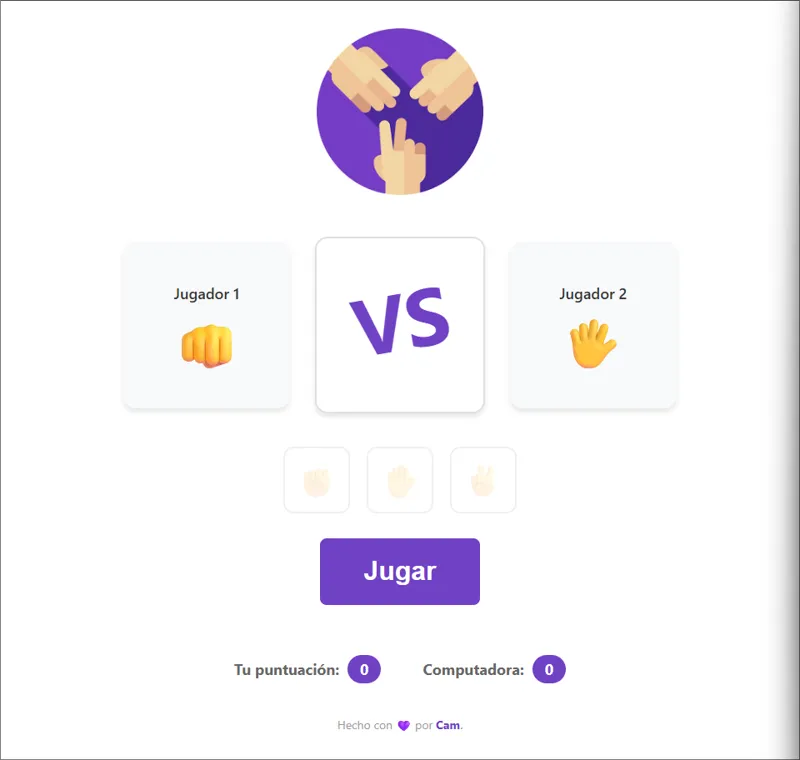

Ingeniería en Informática
Universidad Nacional de La Matanza (UNLaM)
Programación, bases de datos, análisis de sistemas e ingeniería de software.
Hola, soy
Estudiante de Ingeniería en Informática · QA Tester
Pasante de IT en Mercedes-Benz Camiones y Buses Argentina
Soy estudiante de Ingeniería en Informática en la UNLaM y actualmente trabajo como pasante de IT en Mercedes-Benz Camiones y Buses Argentina, en el área de Sistemas de la Planta Zárate.
Me gradué de la Diplomatura en Testing QA (UTN y Fundación Empujar) y hoy me estoy formando en automatización de pruebas con Selenium y Python. Tengo experiencia en diseño y ejecución de casos de prueba, reporte de bugs, documentación, SQL, Jira y metodologías ágiles.
Me interesa seguir creciendo en IT, aportando pensamiento analítico, atención al detalle, ganas de aprender y trabajo en equipo.
Mercedes-Benz Camiones y Buses Argentina · Sistemas – Planta Zárate
Negocio familiar
Universidad Nacional de La Matanza (UNLaM)
Programación, bases de datos, análisis de sistemas e ingeniería de software.
Testing Master – UTN y Fundación Empujar
Diseño de casos de prueba, sistema de tickets, resolución de incidentes, documentación y casos prácticos.
Formación práctica
Automatización de pruebas con Selenium y Python, usando VS Code y Git Bash.

Consume la PokéAPI en tiempo real: busca por nombre, muestra el arte oficial y la versión Shiny, datos de tipo, peso y altura, y barras dinámicas de HP, Ataque y Defensa.
Gestión de contactos en C con almacenamiento persistente en archivos: alta, edición, búsqueda y baja, validaciones, memoria dinámica con structs y ordenamiento alfabético.

Lista de tareas interactiva: agregar tareas, marcarlas como completadas con efecto de tachado y eliminarlas. Diseño responsive.
Operaciones aritméticas básicas con función de limpieza y validación de datos para asegurar cálculos correctos.

Juego contra la computadora con jugada aleatoria, resultados en tiempo real y puntuación acumulativa.
¿Tenés una propuesta o querés charlar? Escribime por cualquiera de estos medios.